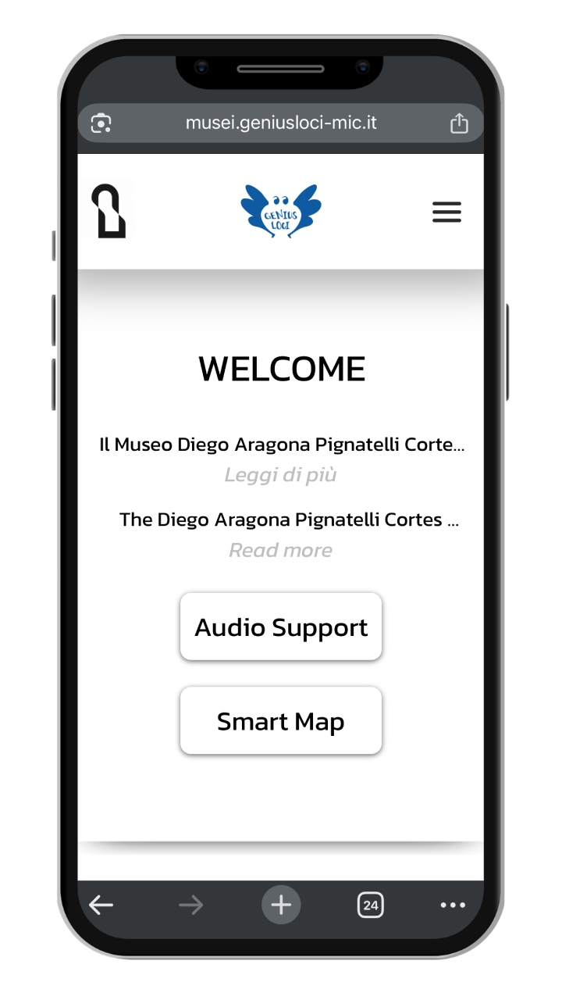
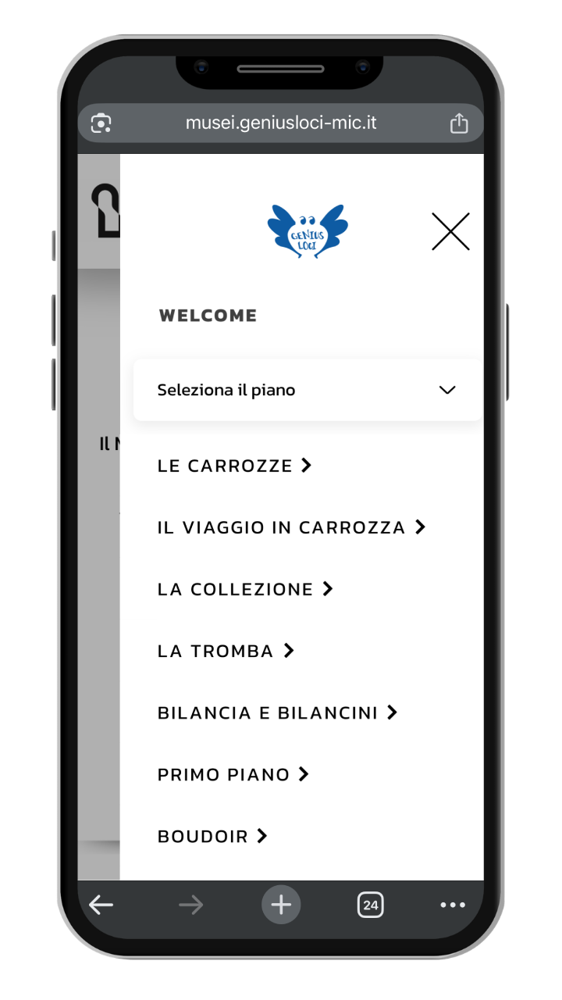
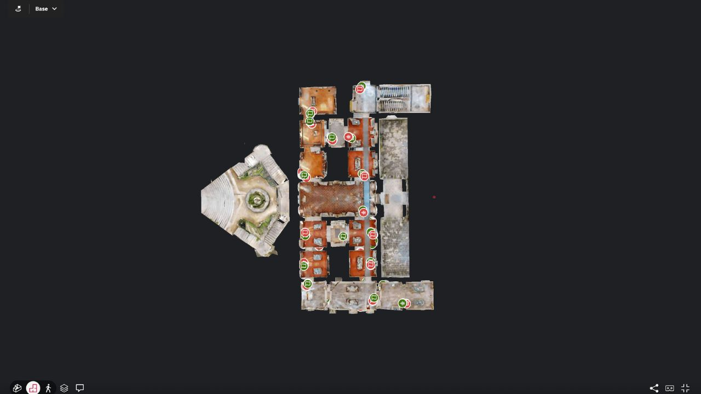
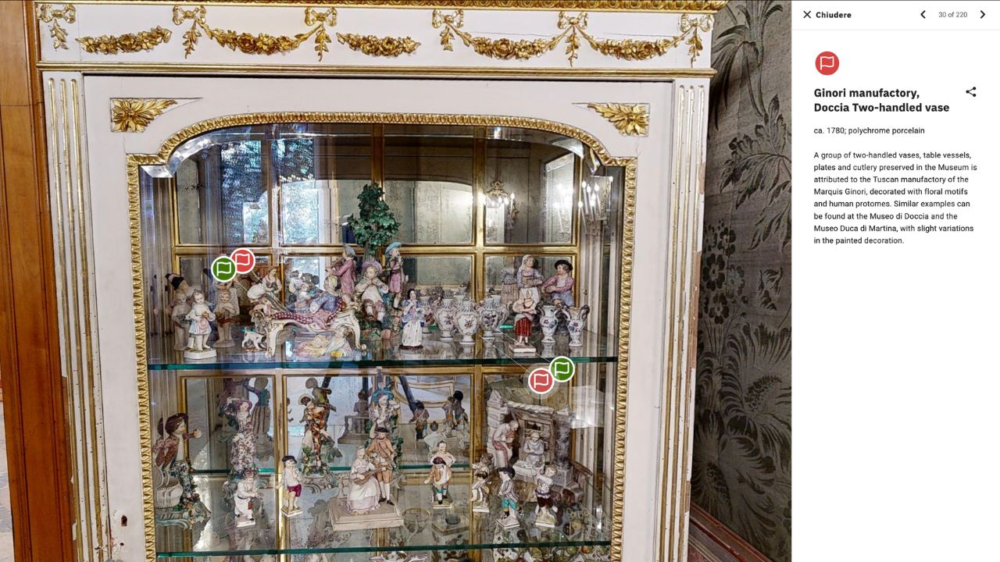
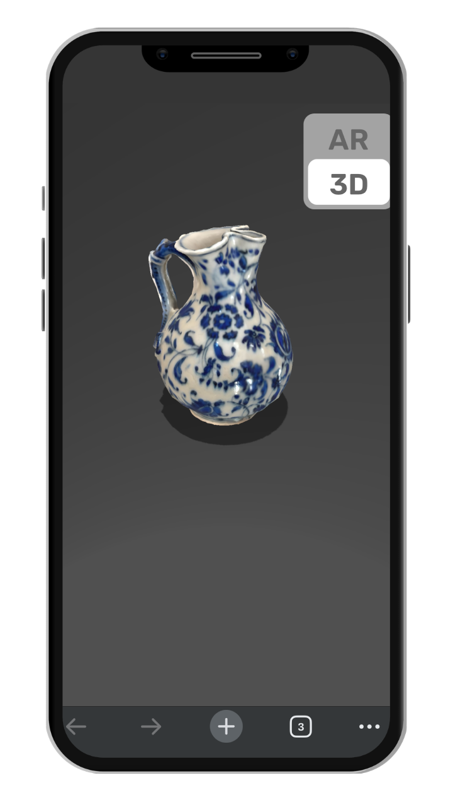
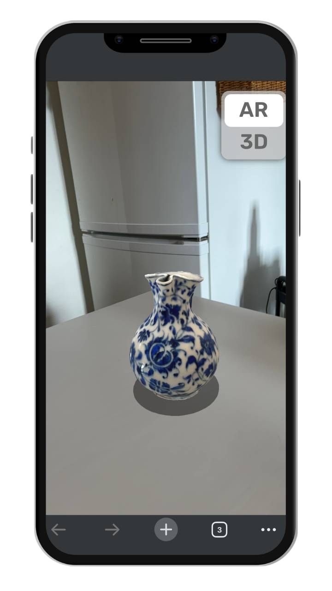
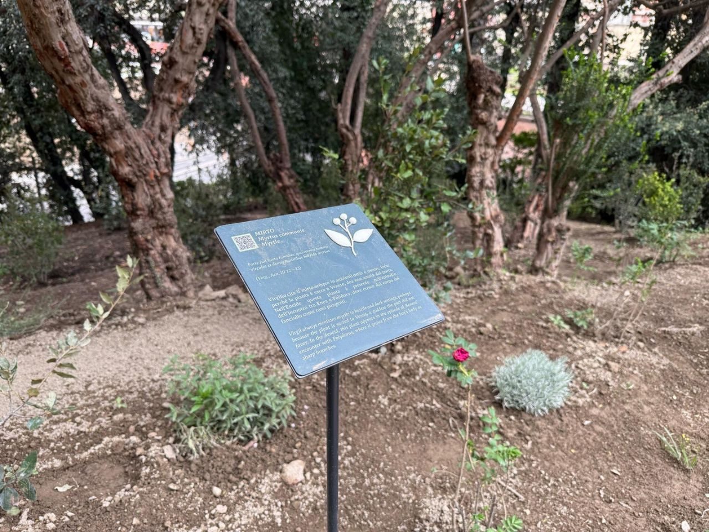
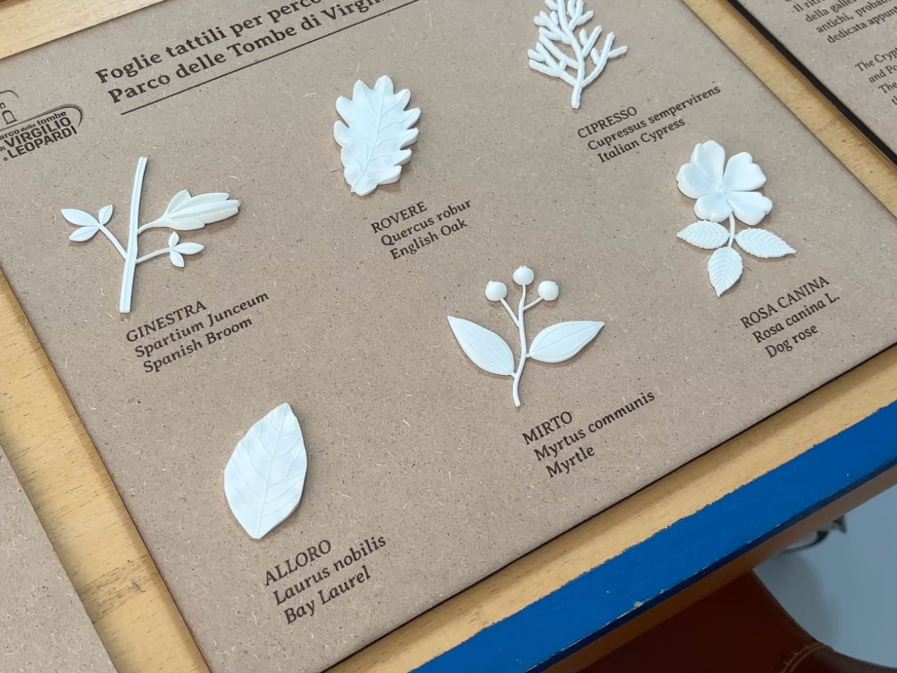
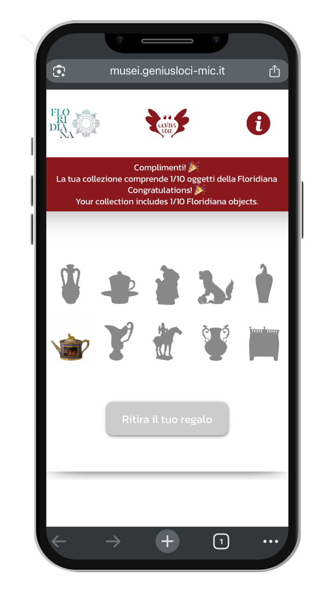
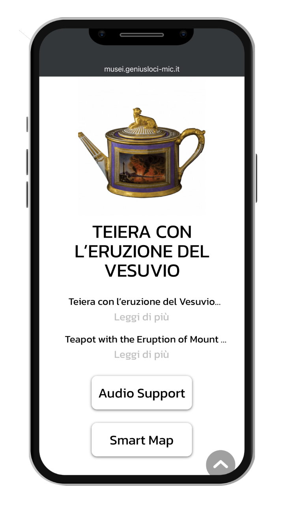

Genius Loci
Digital and accessible museum experience for the Campania Regional Museums Directorate.
Genius Loci is an ongoing cultural accessibility project developed for 28 museums and cultural heritage sites managed by the Campania Regional Museums Directorate in Italy, in collaboration with Icecubes.
The project focuses on improving cognitive, cultural and sensory accessibility across a diverse network of museums, archaeological sites, historical buildings, monumental spaces and parks.
Rather than applying a single digital format to every location, Genius Loci builds a flexible system that adapts to the specific identity of each site. Digital tools, physical supports and narrative strategies are combined to make each place easier to access, understand and experience.
The project works as a hybrid ecosystem, integrating mobile-first web interfaces, QR-code based content, multilingual texts, audio guides, digital twins, XR experiences, tactile supports, AI-assisted workflows and small interactive games. Each element is designed to transform the museum visit into a clearer, more inclusive and more engaging journey.
Mobile Web Experience


A mobile-first interface accessible through QR codes placed on welcome panels, room panels, object labels and display cases. The web pages provide multilingual content, audio guides, smart maps, object-related information and audio support for blind and visually impaired visitors.
The interface is designed for accessibility and readability: large text, clear information hierarchy, high-contrast layouts, simple navigation and generous touch areas. This makes the content easier to use for older visitors, people with low vision, users with colour-perception difficulties and visitors who need a more direct and intuitive reading experience.
Digital Twin & Smart Map


The digital twin allows visitors to explore museum spaces remotely or during the physical visit. It functions as an interactive spatial catalogue, where rooms, objects and points of interest are connected to multimedia content, audio, images, XR links and further reading.
The experience can be organised through different levels of exploration, such as essential routes, complete routes, in-depth materials and child-oriented content. This allows visitors to choose a path based on their time, interests and accessibility needs.
XR Experience


Selected objects and spaces can be expanded through web-based XR experiences, allowing visitors to access additional layers of storytelling through augmented, virtual or mixed reality. These experiences create a bridge between the physical exhibition and digital interpretation.
Tactile & Sensory Supports


Physical supports, tactile elements and 3D-printed objects are developed to improve sensory accessibility and offer alternative ways of experiencing museum content. These materials translate visual, spatial and natural information into forms that can also be explored through touch.
In some sites, tactile supports are designed around the specific character of the place. For example, a historical-archaeological route can be enriched with botanical elements such as tactile leaves, creating a more layered and inclusive way to discover the site.
Gamification & Extra Experiences


Some museum experiences include playful formats designed for younger visitors and families. For Villa Floridiana, a treasure-hunt path uses ceramic-shaped panels placed in the park to invite visitors to discover the museum through QR codes, object stories, images and audio content.
The goal is to guide visitors from the park towards the museum, revealing the cultural value of a place that many people may not immediately recognise. Completing the path unlocks a digital memory-style game, extending the experience through a simple and playful interaction.
As the project is currently ongoing, only selected visual materials and public-facing outputs are presented.